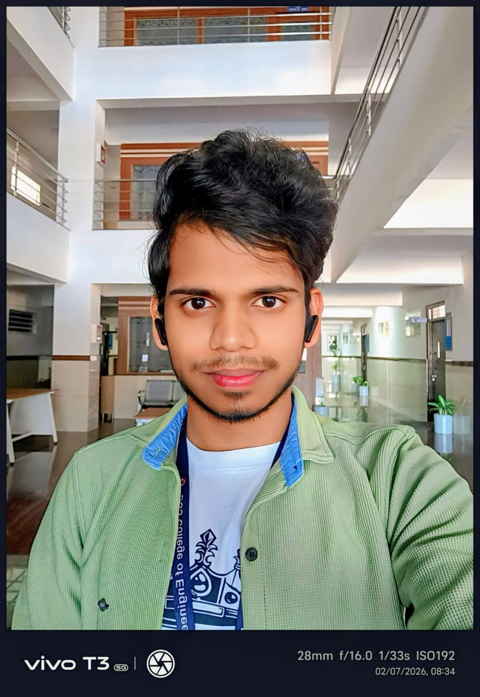

Srinivasulu G
I build systems where full-stack engineering, machine learning and security meet — from NASA-nominated space-weather storytelling to OCR-driven exam scheduling used by an institution.
- CGPA
- 0
- NASA Nominations
- 0
- Certifications
- 0

Bengaluru, India
B.E. CSE ’27 · BGSCET · Ex-IISc CYSECK
01 — About
Engineering that survives
contact with reality.
I started in a diploma programme at IR Polytechnic (9.4 CGPA) and carried that momentum into a B.E. in Computer Science at BGS College of Engineering & Technology, where I hold an 8.6 CGPA.
At CYSECK, IISc Bangalore I worked inside a research environment on ML-based threat detection, network traffic monitoring and firewall policy — which permanently changed how I write application code: threat model first, feature second.
Since then I've shipped a NASA Space Apps global-nominated educational platform, an algorithm visualiser used for academic training, and an OCR-driven exam duty allocation system that removed hours of manual scheduling.
Full-stack delivery
React · Django · Node · MySQL
Applied ML & CV
TensorFlow · OpenCV · MediaPipe
Security analytics
Traffic analysis · Hardening
Ship velocity
Hackathon-tested, 48h builds
-
2027 · Expected
B.E. Computer Science & Engineering
BGS College of Engineering & Technology, Bengaluru — 8.6 CGPA
-
Oct 2025
NASA Space Apps Challenge — Global Nominee ×2
Team Sigma · Global Nominee + Local Impact Award, BGSCET
-
Feb – Mar 2024
Cybersecurity Intern — CYSECK, IISc Bangalore
ML threat detection, network monitoring, ethical hacking, firewall rules
-
2024
Diploma in Computer Science & Engineering
IR Polytechnic — 9.4 CGPA
02 — Selected work
Three case studies, shipped and live.
03 — Toolkit
The stack behind the work.
04 — Experience
Where I've worked.
Cybersecurity Intern
CYSECK — Centre of Excellence in Cyber Security, IISc Bangalore
- Analyzed ML-based threat-detection paradigms and system security optimization inside a research environment.
- Monitored network traffic to proactively identify and mitigate potential vulnerabilities.
- Worked hands-on with network protocols, servers and firewall rule design.
- Practised ethical-hacking methodology on deliberately vulnerable machines.
Technical Volunteer — Advaya Hackathon 2025
Ran technical execution and participant support for the institutional hackathon at BGSCET.
Team Sigma — Hackathon Engineering
Core developer across NASA Space Apps 2025, Advaya 2.0 (2026) and Hackshastra — full-stack + AI under 48-hour constraints.
05 — Achievements
Recognition & credentials.
Hackathons
- NASA Space Apps Challenge 2025 — Two-time Global Nominee & Local Impact Award with Team Sigma.
- Advaya Hackathon 2.0 (2026) — scalable software solution delivered in an intensive sprint.
- Hackshastra — agriculture-scale solution designed for industry-level operations.
Certifications
06 — Open source
github.com/ss6531438
Visit profile ↗Contribution activity
Last 26 weeks
07 — Words
What collaborators say.
* Reference notes from hackathon teammates and peers — formal references available on request.
08 — Contact
Let's build something
amazing.
Hiring, collaborating, or just curious about one of the case studies above — my inbox is genuinely open.